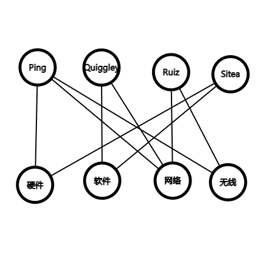

- a) 不是偏序（不满足自反性）
- b) 是
- c) 是
- d) 不是偏序（不满足自反性）
- a) 24 45
- b) 3 5
- c) 不存在
- d) 15 45
- e) 15
- f) 15
- g) 3 5 15
- h) 15
- a) 是
- b) 不是 b,e没有最小上界 f,g没有最大下界
- c) 是
首先证明 p1≼p2 为偏序关系
自反性：p≼p 对每个划分 p 显然成立
反对称性：设 p1≼p2 且 p2≼p1 则有 ∀T1∈p1,∃T2∈p2，T1⊆T2；对 ∀T2′∈p2,∃T1′∈p1,T2′⊆T1′
可知 T1∈p1 与 T2∈p2 一一对应（p1,p2 为划分各集合之间不变）
传递性：设 p1≼p2≼p3
对 ∀T1∈p1 则 ∃T2∈p2 满足 T1⊂T2；∃T3∈p3，T2⊆T3
即 T1⊆T3 即 p1≼p3
因此 p1≼p2 为偏序关系
对 p1,p2 其最大下界为 T1∈p1,T2∈p2
T1∩T2 构成的集合起每一个集合均为 p1,p2 中集合的子集
p1,p2 的最小上界为 该等价关系为 x 与 y 等价
当且仅当 x=x1,x2…xn=y xi 与 xi+1 同属于 p1/p2 中的一个元素（集合）
确定用户需求<写出功能需求<设置测试点<开发系统需求<写文档<开发模块A<开发模块B<开发模块C<模块集成<α 测试<β 测试<完成
假设 uRv 则有与 {u,v} 关联的边，即有与 {v,u} 关联的边，故有 ∪Ru；简单图中没有环结构，故元 {u,u} 关联的边 ∀u,uRu
令 S 为聚会上的人构成的集合
E 是 S×S 中 u 知道 v 名字的有序对 (u,v) 的集合
边是有向的，不允许多重边，存在环
不存在，无向图中度为技术的顶点应有偶数个
- a)

- b)
∣N(A)∣≥∣A∣
A 只有 1 个元素：显然
A 只有 2 个元素：N(A)≥3>2=∣A∣
A 有 3 个元素时任意领域都有 2 个人精通 ∣N(A)∣=4>3=∣A∣
A 有 4 个元素时，∣N(A)∣=4>≥∣A∣
存在
- c)
{Ping,网络},{Quiggley,软件},{Ruiz,无线},{Sitea,硬件}
建立二分图模型 V1 为 m 个中奖者每人出现两次的集合，其元素为 2m 个每个中奖者需要的奖品
对 ∀A⊆V1, N(A) 为全部 2m 个奖品即 N(A)=v2,∣N(A)∣=∣V2∣=2m,∣N(A)∣=2m≥A 故每个中奖者都能选两个喜欢的奖品
(⇒) 当d1,d2,⋯,dn成图序列时，存在顶点为v1,v2,⋯,vn的简单图v1与v2,⋯,vd1+1相邻，去掉v1以及与v1相邻的边，所剩下v2,⋯,vn的简单图其度度为d2−1⋯dd1+1−1,dd1+2⋯dn
(⇐) 对于非递增序列d1,d2,⋯,dn，当序列d2−1,dd1+1−1,dd2+2,⋯dn重新排列为非递增数列为成图序列2≤i≤d1+1时，该序列对应的图中vi的度为di−1, d1+2≤i≤n, vi的度为di
构造新顶点v1与v2,⋯,vd1+1相邻，其度为d1，新的度序列即为d1,d2,⋯,dn
0个顶点的完全图边数为
(v2)=2v(v−1)
∣G∣的边数为2v(v−1)−e
1121100210110210
当v有环时为deg(v)−l(v)，其中l(v)为v的环数；当v无环时为deg(v)
f(u1)=v1f(u2)=v2f(u3)=v8f(u4)=v5f(u5)=v6
f(u6)=v7f(u7)=v4f(u8)=v10f(u9)=v3f(u10)=v9
一个图与自身同构，满足自反性
G与H同构，即存在f为G到H的一一对应
满足相邻关系不变，f−1从H到G也保持关系不变
H与G同构，即同构关系是对称的
G与H同构，H与I同构，即有f，g分别保证相邻关系不变
f，g满足G到I一一对应且保持相邻关系不变
G与I同构，得到同构关系是传递的